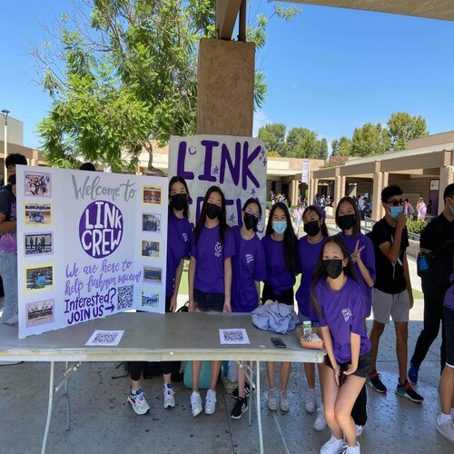
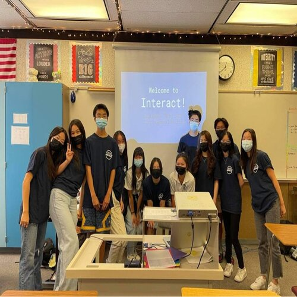
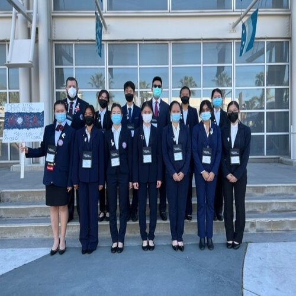
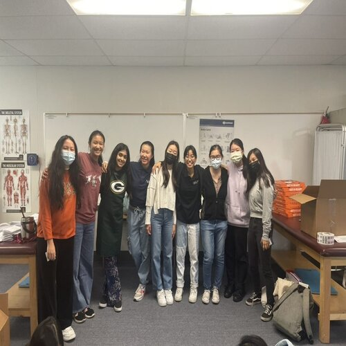
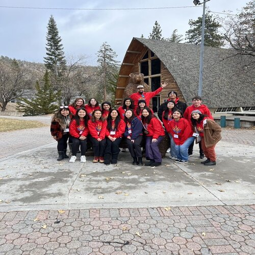
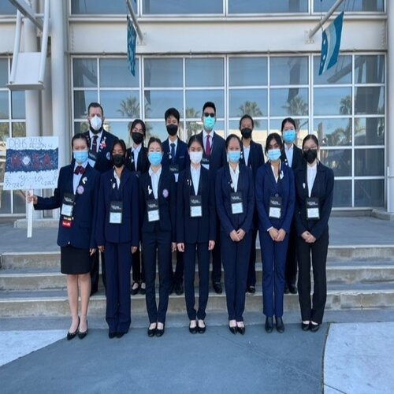
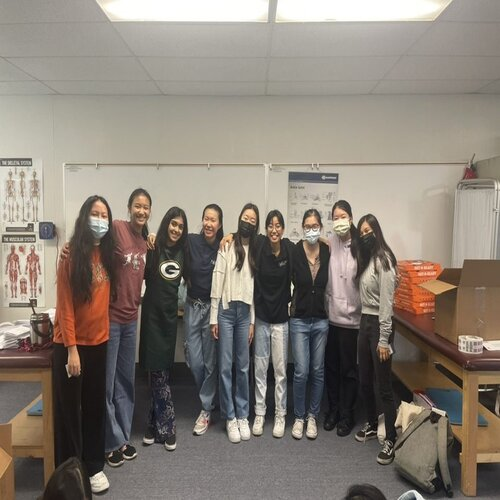
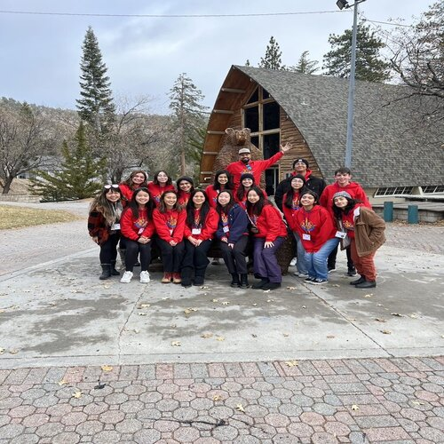

Amy Wang
My name is Amy Wang and I am currently a freshman studying Pre-Business at the University of California, Riverside. I plan to concentrate in finance and to expand my knowledge in regards to that field. As a freshman in my first quarter of college, I have joined Beta Alpha Psi, Association for Information Systems as well as other organizations not only related to my career path but also hobbies and cultural groups.
My past work experience includes customer service at a smoothie shop during the summer of my junior year during high school. Aside from that, I have held a number of leadership positions during my four years of high school. This includes the President position of Interact club, a Rotary International organization. I have also served as the Vice President of Finance in Future Health Professionals by raising funds for the club to support events including the State Leadership Conference. Throughout the years, I also attained leadership standing in several other campus organizations. During quarantine in 2020 I established my own group named “Medicine Today”. I accumulated over 100 members and managed nearly 20 officers.
Although my previous interests mainly revolve around the pre-med track, I plan to pursue a business/finance related career as I began to dive deeper and gain more experience in related fields. I am looking for internships and other learning experiences in association with finance and accounting. I am happy to meet for coffee chats to discuss any possible opportunities and to simply meet new people.
Nature's Juice
Server and Cashier
• Blended smoothies and made Acai Bowls
• Took orders and communicated with customers
• Counted to money after shift and calculated the total
President
• Coordinated monthly fundraisers at local restaurants to support future club-funded events
• Served at numerous food drives, assisted attendees to packaging and delivering for low income communities and set up large events such as auctions with 50+ attendees for the city
• Created fundraisers that raised $100+ to fund service events for local communities (food drives)
Project Lead and Caller
• Called 70+ facilities for PPE requests and continued weekly communications through email
• Managed donation processes of 6900+ pieces of PPE by contacting donors, recipients, and organizing pickup/dropoff processes
Portfolio





 

Education
UC Riverside
Diamond Bar High School
Portfolio